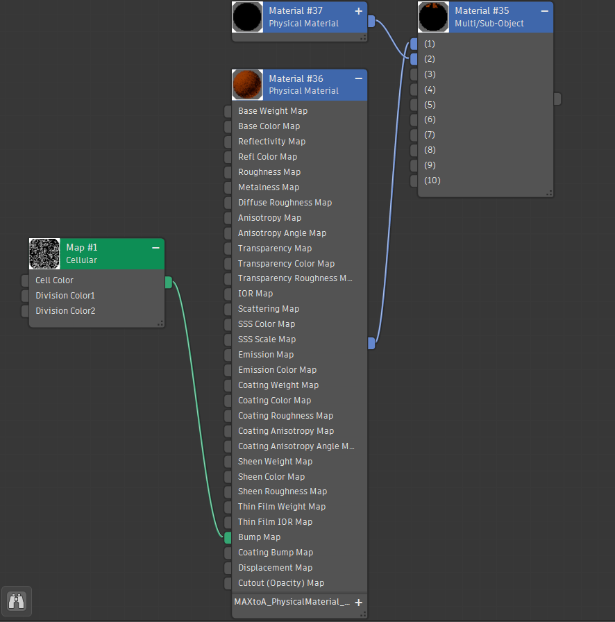

This project explores both static and animated 3D design, combining technical modelling skills with visual storytelling. The work was developed across two connected assignments: first creating a photorealistic 3D scene, and then extending it into a fully animated sequence.
The goal was to create a 3D environment inspired by tabletop games and toys from popular culture. The scene was set inside a minimal interior space with a wooden floor and painted walls. This simplified environment was intentionally designed to emphasise the objects themselves, which were scaled larger than life to create a playful and surreal atmosphere.
Five original 3D objects were created from scratch:
Each object was designed to demonstrate different modelling techniques, material properties, and lighting interactions.

The modelling process relied heavily on procedural workflows and parametric surfaces, allowing for flexibility and precision throughout development.
The dice and basketball were created using structured modifier-based workflows, starting from simple primitives and progressively refining them through subdivision, chamfering, and symmetry. This approach ensured clean topology and made it easy to iterate on proportions and detail.
The chess pieces were created using spline-based modelling and a lathe modifier, producing smooth, symmetrical forms ideal for glass materials. Parametric control allowed the silhouette to be refined efficiently without rebuilding the geometry.
Overall, this workflow demonstrated an understanding of efficient, non-destructive modelling techniques commonly used in 3D production.
A strong focus was placed on material realism through the use of:
Careful UV mapping ensured textures were applied consistently without distortion, contributing to the overall realism of the scene.

Lighting played a key role in achieving a photorealistic result. The scene used a combination of multiple light sources to simulate natural and artificial lighting conditions.
Global illumination was implemented to simulate light bouncing between surfaces, producing soft shadows, subtle reflections, and realistic colour interaction between objects. Ambient lighting was also used to reduce harsh contrast and maintain visibility across the scene.
These techniques helped unify the environment and enhanced the believability of the materials.
The second stage of the project involved transforming the static scene into a 20-second animation.
The animation was planned using a hand-drawn storyboard, mapping out camera movement and object behaviour across multiple shots. This ensured a clear narrative flow before production began.

The final animation includes:
Keyframe animation was used to control both object movement and camera behaviour. Techniques such as rotation, translation, and timing were carefully adjusted to create natural, readable motion.
The animation was rendered as an image sequence and assembled into a final video using Adobe Premiere Pro.
This project demonstrates a full 3D workflow, from modelling and texturing to lighting, rendering, and animation. It highlights both technical problem-solving and creative decision-making, particularly in balancing realism with a playful, stylised concept.
By combining a clean environment with detailed materials and controlled animation, the final result presents a cohesive and engaging 3D scene that effectively showcases core principles of visual computing and design.